Sistemas Operativos y Redes
Capa de Enlace
Semestre 2022-1
Cristian Ruz - cruz@ing.puc.cl
Departamento de Ciencia de la Computación
Pontificia Universidad Católica de Chile
Frames, Errores y Control de Flujo
Objetivo: Transmisión de frames a través de un enlace
Unidad de transmisión: frame
Servicios:
- Transforme un paquete en frames, y transmitirlo a través de UN enlace.
- Determinar quién puede usar el medio compartidor: Medium Access Control (MAC)
- Transferencia confiable en medios con alta tasa de errores.
- Detección y corrección de errores.
- Qué hacer si un host llega a un punto de saturación y no puede recibir/emitir más frames: control de flujo

Cada enlace funciona de manera independiente de los demás.
¿Dónde se implementa la capa de red?
- Network Interface Card (NIC)
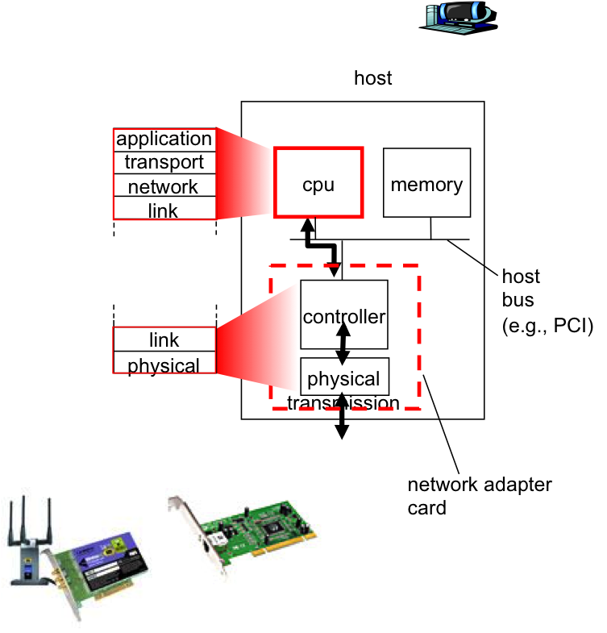
Detección de errores
¿Cómo saber si un frame llegó con errores?
- Se agregan bits de redundancia que ayuden a detectar algunos errores.
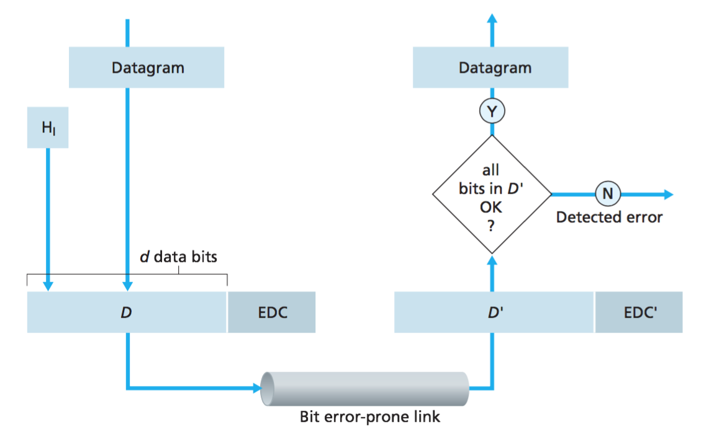
Parity Check
Paridad simple. Errores de un bit
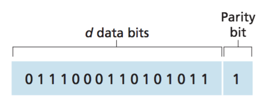
Paridad doble. Detectar y corrige errores de un bit. Detecta errores de 2 bit.
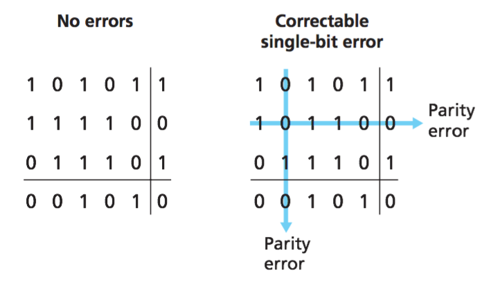
Checksums
Los bits se toman como secuencias de enteros de $k$ bit ($k < d$), y se suman.
Facil de implementar en software, pero no protege contra muchos errores.
Cyclic Redundancy Check (CRC)
- $D$: secuencia de $d$ bit de datos
- $R$: secuencia de $r$ bit de comprobación (CRC)
- $G$: patrón conocido $G$, de $r+1$ bit
- La secuencia $\langle D,R \rangle$ debe ser divisible por $G$
- Receptor puede chequear el resto de dividir $\langle D,R \rangle$ por $G$
- Detecta errores de hasta $r$ bit
Teoría
- $(D\times 2^r) \oplus R = nG$
- $(D\times 2^r) = nG \oplus R$
- $R$ es el resto de la división binaria $\frac{D \times 2^r}{G}$
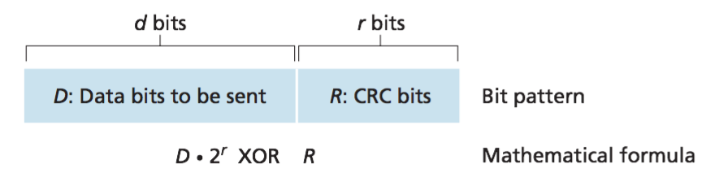
Ejemplo: $D=101110$, $G=1001$, determinar $R$
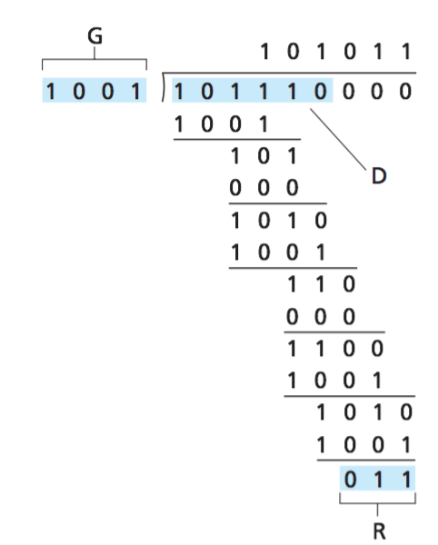
Se envía: $101110011$
MAC: Acceso al medio
Problema de acceso al medio. Presente en medios compartidos (broadcast)
- Partición de canal: tiempo, frecuencia o código
- Acceso aleatorio
- Turnos
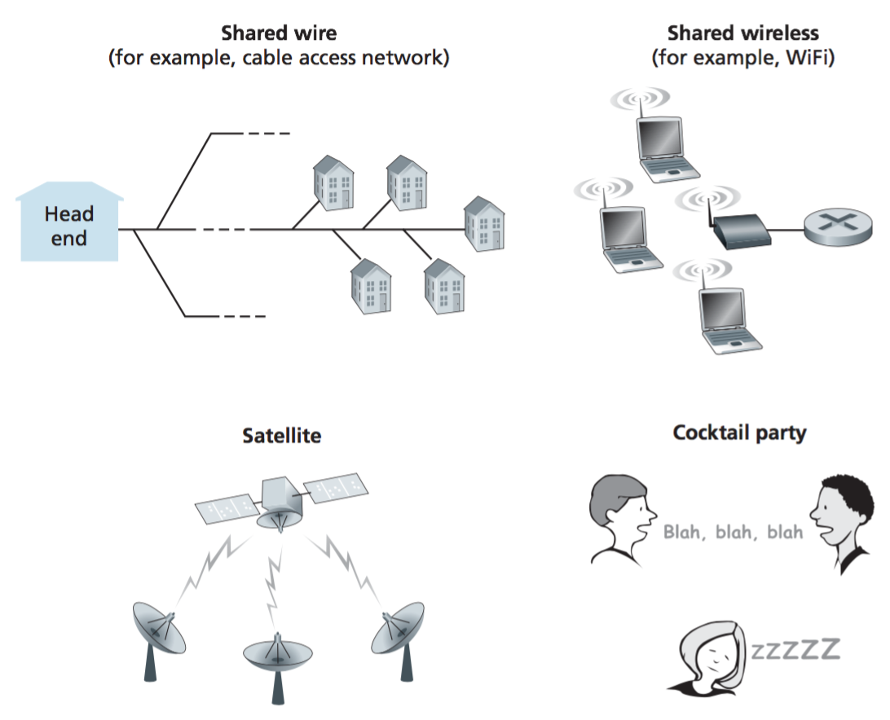
Particionamiento por tiempo: Time-Division Multiple Access (TDMA)
- Acceso por turnos fijos
- Cada nodo tiene un slot que es múltiplo de un periodo de tiempo
- Con $N$ nodos y slot de tiempo $T$, se hacen rondas de $NT$
- Nodo $i$ durante $[(rN+i)\times T, (rN+i+1)\times T)$
- Con 6 nodos de 5 sec, nodo 0 transmite durante $[0,5), [30,35), [60,65), \ldots$
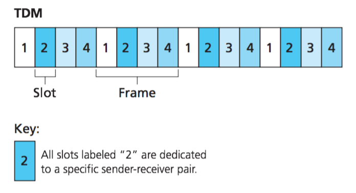
Particionamiento por frecuencia: Frequency-Division Multiple Access (FDMA)
- División por bandas de frecuencia. (Ej: canales de radio, televisión)
- Cada estación tiene una banda fija asignada
- Bandas no utilizadas quedan inactivas
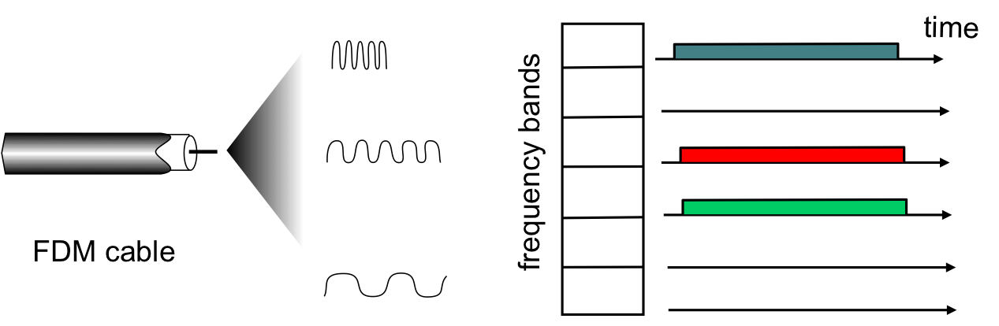
Particionamiento por código: Code-Division Multiple Access (CDMA)
- Permite que varios usuarios transmitan en la misma frecuencia
- Cada usuario posee un código de transmisión: códigos debe ser ortogonales
- Señal a transmitir: data cliente $ \cdot $ código cliente
- Señal recibida: data recibida $ \cdot $ código cliente
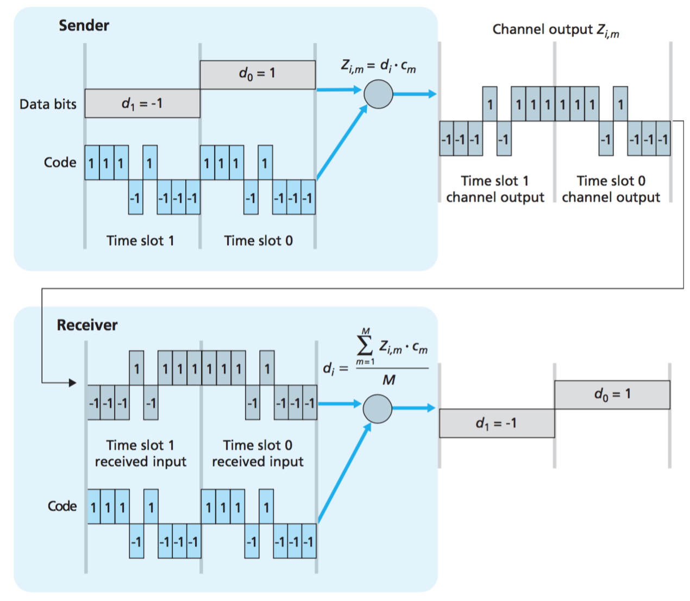
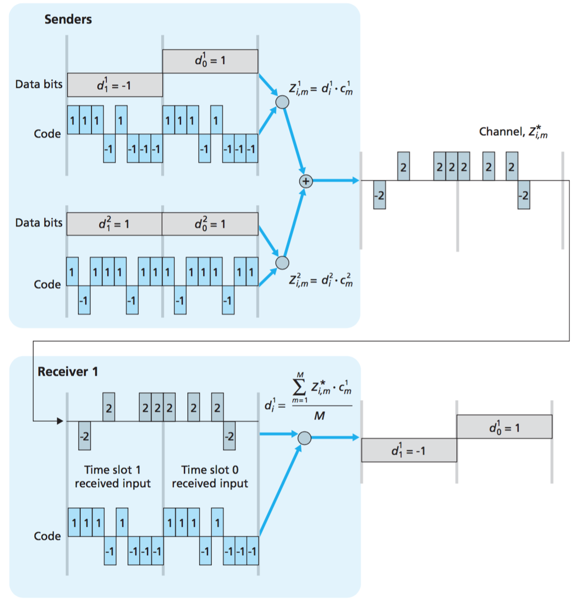
Acceso aleatorio
Protocolos optimistas
- Cada nodo transmite cuando lo desea ocupando todo el ancho de banda disponible
- Si dos o más transmite al mismo tiempo, se produce colisión
- Protocolo debe determinar:
- Cómo detectar colisiones
- Qué hacer ante una colisión (cómo recuperarse)
- ALOHA particionado
- ALOHA
- CSMA, CSMA/CD, CSMA/CA
ALOHA PARTICIONADO
- Todos los frames deben tener el mismo tamaño
- El tiempo se divide en particiones del tamaño requerido para transmitir un frame
- Nodos pueden empezar a transmitir sólo al comienzo de estas particiones
- Si dos o más empiezan a transmitir en la misma partición, se detecta colisión
Ante una colisión:
- Cada nodo vuelve a transmitir en la siguiente partición, con probabilidad $p$, hasta que no haya colisiones
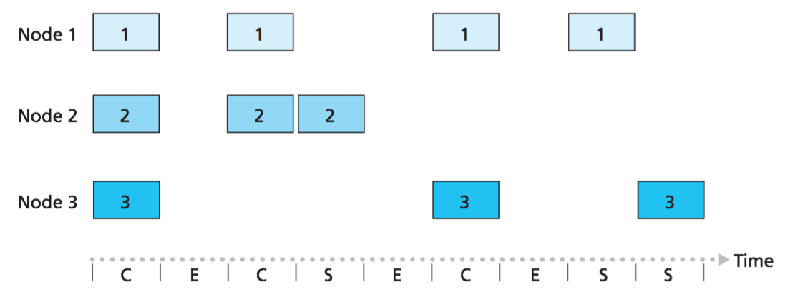
ALOHA particionado
Eficiencia
- $N$ nodos con frames a enviar. Probabilidad de enviar $p$.
- Probabilidad que un nodo dado pueda transmitir: $p(1-p)^{N-1}$
- Probabilidad que cualquier nodo pueda transmitir: $Np(1-p)^{N-1}$
- $p^*$ que maximiza $Np(1-p)^{N-1}$
- Maximo valor para esta expresión $\sim 0.368$
- Canal es utilizado a los más el $37\%$ del tiempo
ALOHA
No hay sincronización al momento de empezar a transmitir
- Mayor probabilidad de colisiones
- Frame enviado en instante $t_0$ puede colisionar con frames enviados entre $[t_0-1,t_0+1]$
- Eficiencia $\sim 0.18$
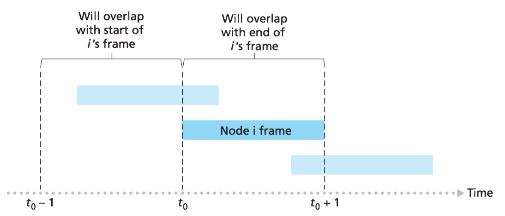
Carrier Sense Multiple Access: CSMA
No interrumpir a los demás. Emisor escucha antes de transmitir
- Si detecta canal inactivo, envía. Si detecta canal activo, espera hasta dejar de detectar actividad
- Retrasos en la propagación permite que ocurran colisiones
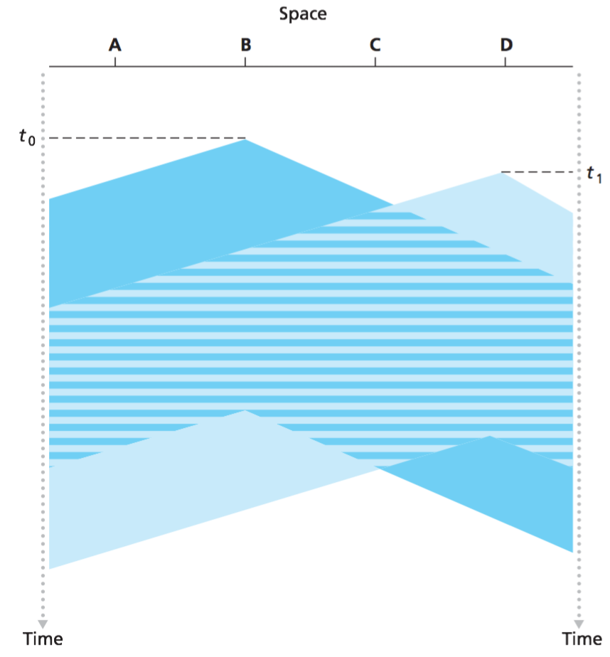
CSMA, with Colission Detection: CSMA/CD
- Detección rápida de colisiones. Aborta en cuanto se detecta colisión, usando jam signal
- Usando en LAN (Ethernet): comparando nivel de fuerza de señales. WLAN: difícil de detectar
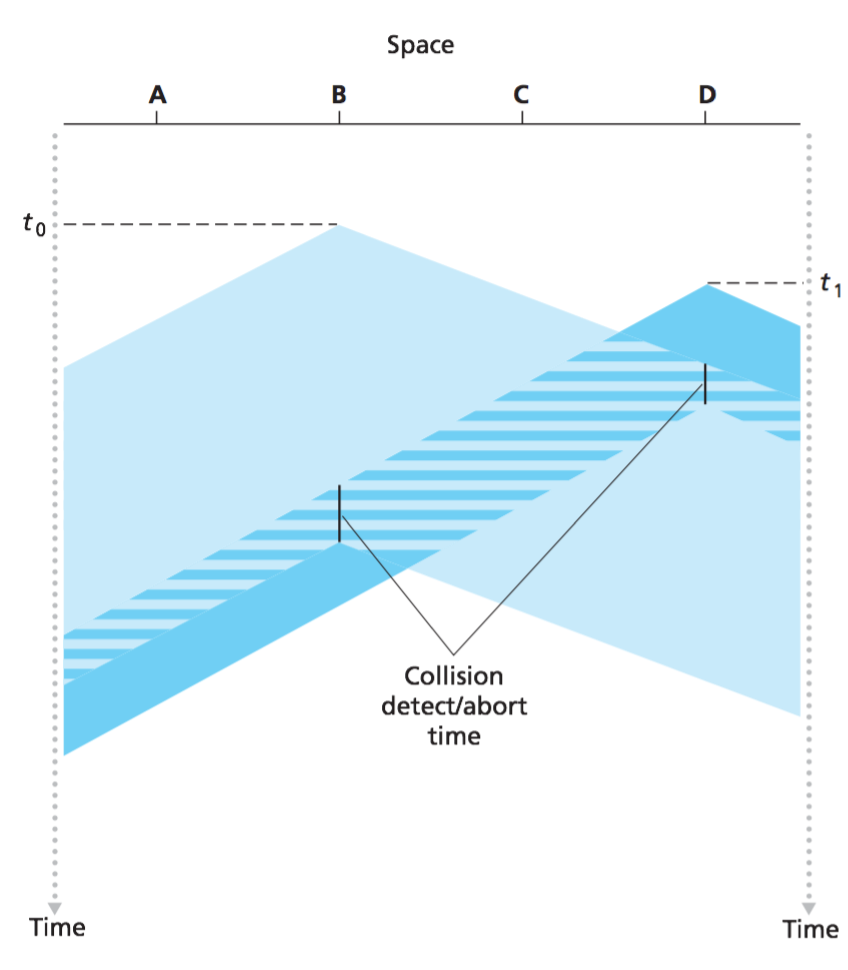
CSMA, with Colission Avoidance: CSMA/CA
- Si se detecta colisión se espera un tiempo aleatorio (con exponential backoff)
- Se envía un frame ACK para confirmar recepción (CRC correcto)
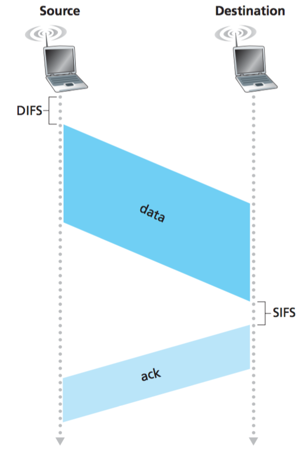
CSMA, with Colission Avoidance: CSMA/CA
Pero puede haber terminales ocultos
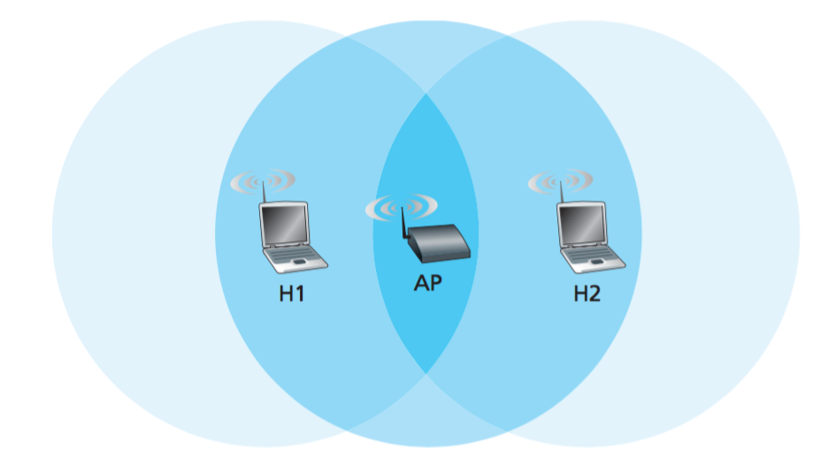
CSMA, with Colission Avoidance: CSMA/CA
Complementado con paquetes adicionales: RTS (Request to Send) y CTS (Clear to Send)
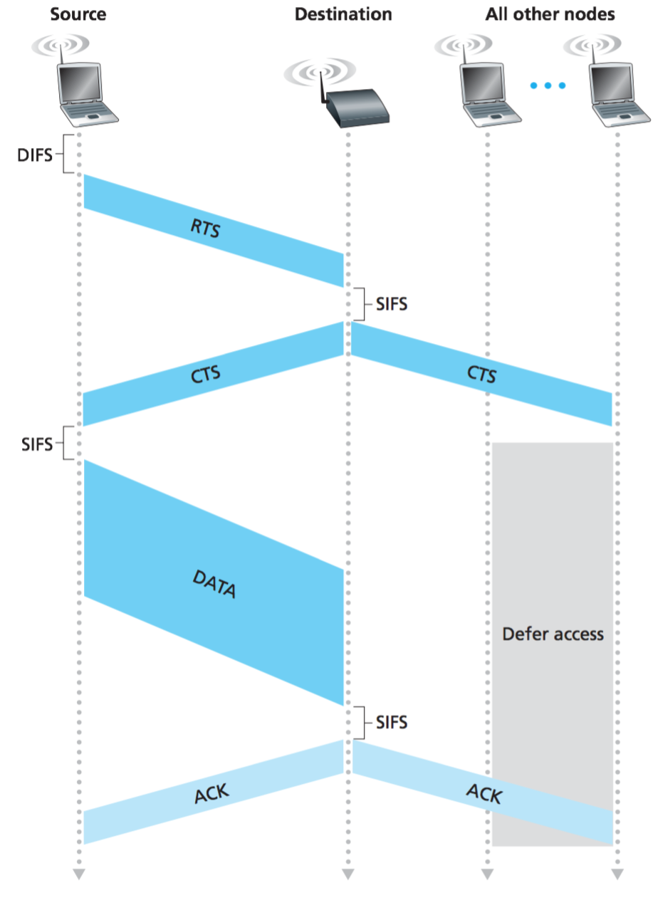
Protocolos por turnos: Master/Slave (polling)
- Master invita a los slaves a transmitir (polling)
- Eficiente con terminales ``tontos''
- Alta latencia con muchos slaves
- Punto de falla centralizado
- Usado en Bluetooth
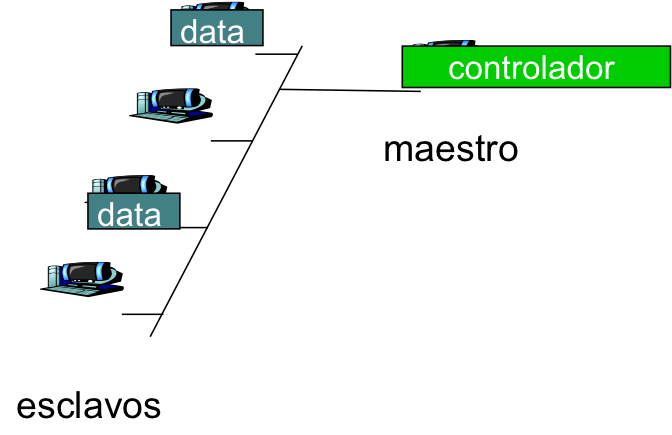
Protocolos por turnos: Token
- Nodos se pasan un token
- Sólo el que tiene el token puede transmitir
- Alta latencia con muchos miembros
- ¿Qué pasa si el nodo que tiene el token desaparece?
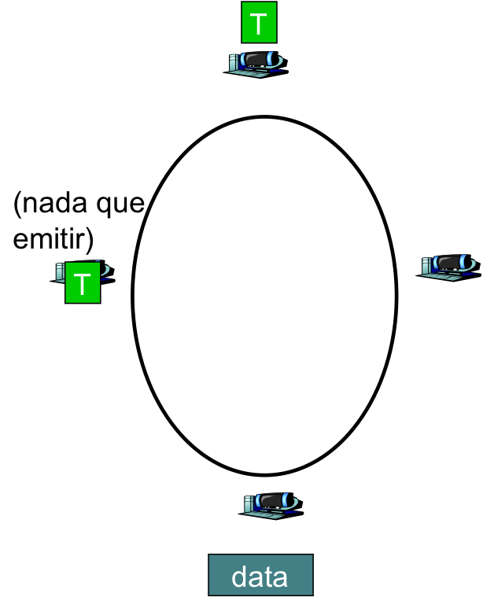
FDDI, IEEE 802.5 Token ring
Hardware de Capa de Enlace: Switched LANs
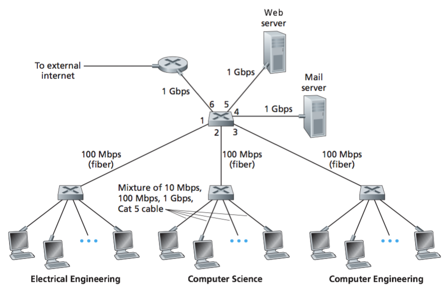
Switched LAN y 4 subredes
Direcciones MAC
MAC address, o Dirección Física, o Dirección de Hardware
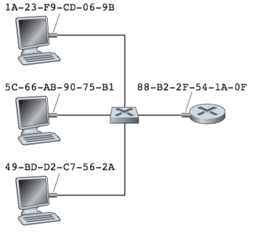
Identificador único de 48 bit (6 byte). Modificable por software
- 24 bit para fabricante, 24 bit para NIC
- Estructura de direccionamiento plana
- FF-FF-FF-FF-FF-FF es dirección de broadcast
Address Resolution Protocol (ARP)
Tabla ARP contiene asociaciones $\langle \text{IP},\text{MAC},TTL \rangle$
- Cada nodo (host,router, algunos switch) mantiene una tabla ARP
- TTL: Time-To-Live, indica el tiempo que será recordada esa entrada
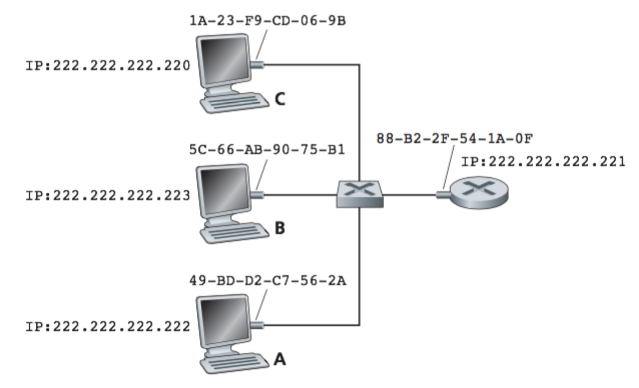
Tabla para 222.222.222.220 (comando
arp)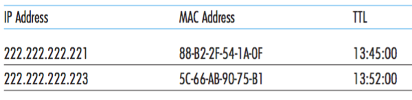
¿Cómo encontrar una dirección MAC?
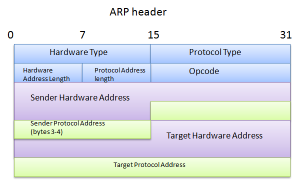
- $C$ quiere comunicarse con $A$, que no está en su tabla
- $C$ envía mensaje ARP Query con IP de $A$ y MAC
FF-FF-FF-FF-FF-FF - Todos reciben el mensaje
- Solo $A$ envía mensaje ARP Response packet con su dirección MAC
- $C$ guarda en su tabla ARP la asocación IP(A),MAC(A)
Atrevesando subredes: ¿si el mensaje va a otra subred?
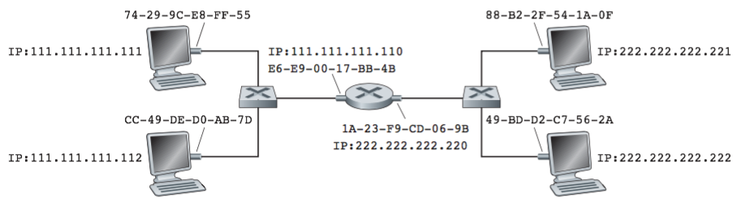
111.111.111.111desea enviar frame a222.222.222.222222.222.222.222no está en su tabla ARP (ni en broadcast)- Envía: $\langle \text{IP}=222.222.222.222, \text{MAC}=? \rangle$.
- Si MAC=
49-BD-D2-C7-56-2A, el frame no sale de la subred. - Debe ser MAC=
E6-E9-00-17-BB-4B. Router recibe y pasa a su capa de red. - Router envía frame con $\langle \text{IP}=222.222.222.222, \text{MAC}=\text{49-BD-D2-C7-56-2A} \rangle$
Ethernet
Ampliamente usado para LAN. Original de 1970's. Switched desde 1990's.
- Basado en coaxial: broadcast LAN. Topología de bus.
- Basado en hub: broadcast LAN. Topología estrella.
- Basado en switch. Evita colision. Dispositivo L2.
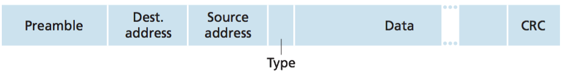
Frame Ethernet
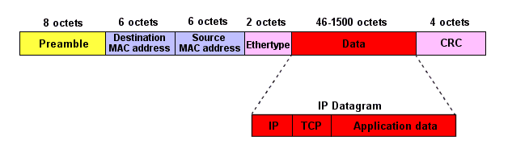
- Data. 46 a 1500 byte. Ethernet MTU: 1500 byte. Jumbo frame $\sim$ 9000 byte.
- Destination MAC. Destinatario la procesa solo si es la propia o FF-FF-FF-FF-FF-FF.
- Source MAC.
- Type. Protocolo: IP, Novell IPX, AppleTalk, ARP
- CRC. Ethernet descarta frames erróneos. No avisa. No confiable.
- Preamble. $7 \times $
10101010, $1 \times $10101011
L2 Switches
Switch recibe frame y retransmite por el enlace apropiado, basado en MAC
Filtering: determine si debe hacer forward o drop
Forwarding: determina por cuál enlace retransmitir.
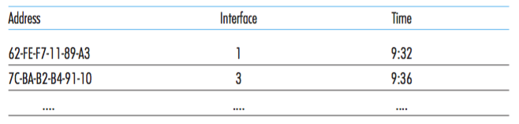
Switch Table
Switch recibe frame en enlace $x$, con destino MAC =
DD-DD-DD-DD-DD-DD- Si no hay entrada para
DD-DD-DD-DD-DD-DD, broadcast por todos los enlaces, salvo $x$ - Si hay entrada para
DD-DD-DD-DD-DD-DDcon enlace $x$, descarta (filtering). - Si hay entrada para
DD-DD-DD-DD-DD-DDcon enlace $y \neq x$, reenvía (forwarding).
Switch Table
Switch aprenden automáticamente su tabla.
- Tabla inicialmente vacía
- Para cada frame recibido, switch almacena:
- source MAC
- enlace de recepción
- tiempo de recepción.
- Después de un aging time, el switch elimina la entrada. Un host puede ser reemplazado, y esta información llega eventualmente al switch.
- Un switch es plug-and-play
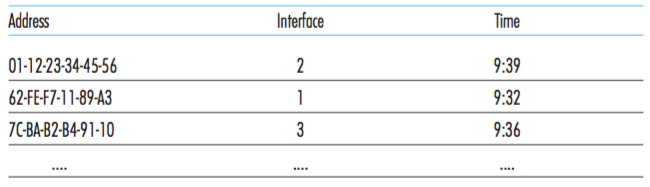
Switch y ciclos
Ciclos son malos para el brodcast.
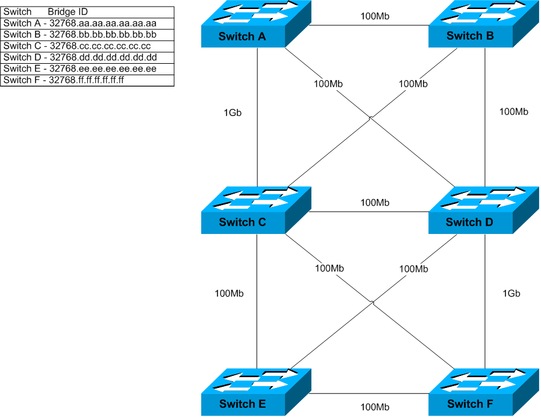
Switches: Spanning Tree Protocol
Etapas:
- Elegir un root bridge. En base a una prioridad + identificar (MAC)
- Cada uno (salvo root) elige enlace en dirección al root bridge (RP)
- Cada uno determina sus designated port
- Puertos no usados quedan como blocked (alternativos)
Switches: Spanning Tree Protocol
Topología final se autoconfigura como un spanning tree
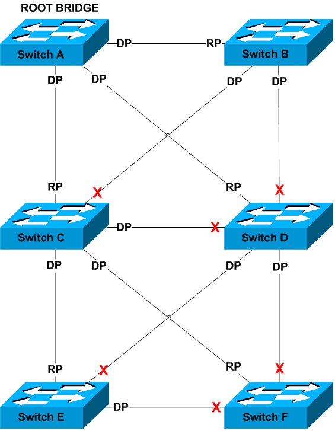
Switch vs Router
Switch es L2 (decide en base a MAC). Router es L3 (decide en base a IP)
Switch se autoconfigura. Router debe ser configurado.
Switch no resuelve ARP (no conoce IP). Router sí.
Switch es susceptible a switch poisoning, y broadcast storm
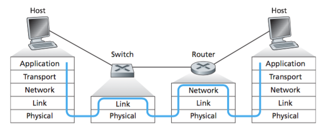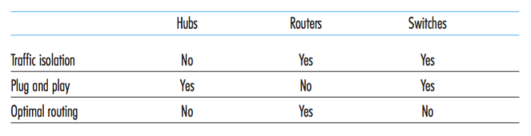
Virtual LANs (VLAN)
Switches no proveen suficiente traffic isolation.
- Broadcasts (ARP, DHCP) pueden pasar por todo la red Switched LAN. ¿Sniffers?
- Entonces, usemos múltipes switches.
- Si un usuario se cambia de "grupo de trabajo", se necesita re-cablear al switch correcto
Virtual LANs (VLAN)
Routers solucionan los problemas, pero VLANs están más al alcance.
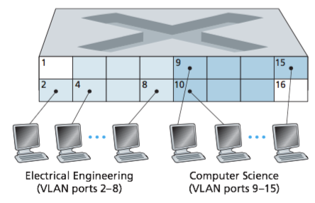
2 VLANs sobre la misma LAN física.
Virtual LANs (VLAN)
Ahora queremos VLANs distribuidas entre switches. VLAN trunking
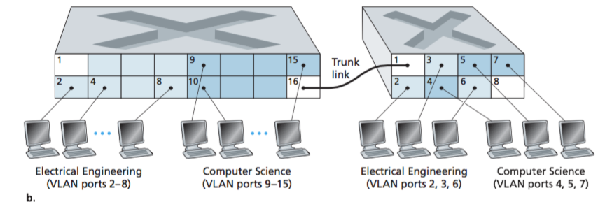
Trunking port pertence a TODAS las VLANs y hace forward.
¿Cómo saber que un frame debe ir de un switch a otro (porque va en la misma VLAN)?
Virtual LANs (VLAN)
¡Modificamos el frame ethernet! IEEE 802.1Q
- Tag Control Information indica número de VLAN
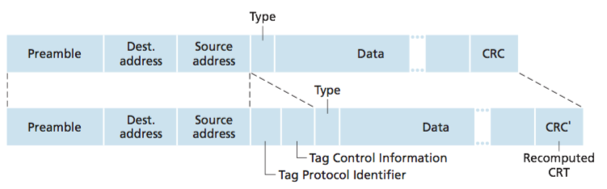
Hay varias formas de construir VLANs
- VLAN en base a puertos (este ejemplo)
- VLAN en base a MAC
- VLAN en base a IP